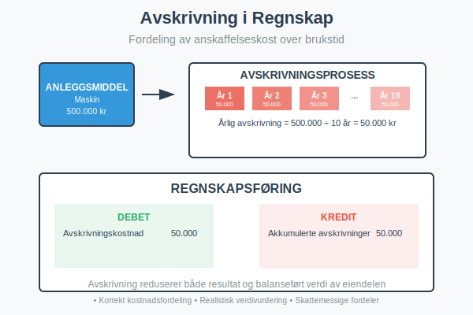
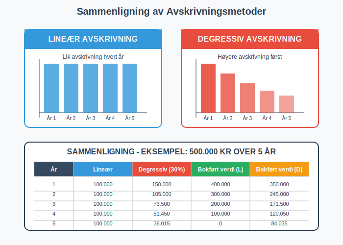
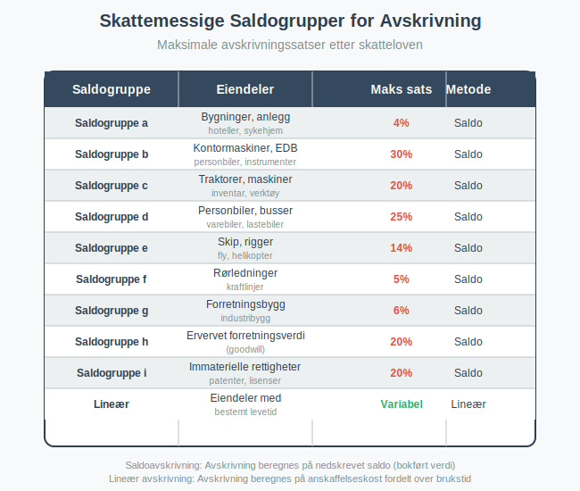

Avskrivning er en regnskapsmessig metode for å fordele anskaffelseskosten til anleggsmidler over deres brukstid. Dette gjelder spesielt for varige driftsmidler som maskiner, bygninger og transportmidler. Avskrivning gjenspeiler at eiendeler mister verdi over tid og sikrer korrekt kostnadsfordeling i regnskapet.
Avskrivning er en sentral del av kostnadsstyring og henger nært sammen med bredere kostnadsbegreper som inntakskost og kostpris, som omfatter alle aspekter av kostnadsberegning og -fordeling i virksomheten.
Før eiendelene kan avskrives over tid, må kostnaden aktiveres i balansen i henhold til regnskapsreglene. For en dypere forståelse av aktivering, se Hva er Aktivering i Regnskap?.

Hva er Avskrivning?
Avskrivning er en ikke-kontant kostnad som reduserer den bokførte verdien av et anleggsmiddel over tid. Formålet er å:
- Fordele kostnader over eiendelens økonomiske levetid
- Gjenspeile verdiforringelse på grunn av slitasje og elde
- Sikre korrekt resultatmåling ved å matche kostnader med inntekter
- Gi realistisk verdivurdering av aktiva i balansen gjennom balansebasert verdivurdering
Grunnleggende Prinsipper
Avskrivning bygger på sammenstillingsprinsippet i regnskapet:
- Kostnader skal føres i samme termin som de tilhørende inntektene
- Anleggsmidler bidrar til inntektsgenerering over flere år
- Anskaffelseskosten må derfor fordeles over brukstiden på terminbasis
- Akkumulerte avskrivninger reduserer eiendelens bokførte verdi
Avskrivningsmetoder
Det finnes flere metoder for å beregne avskrivninger, hver med sine fordeler og anvendelsesområder.

For en detaljert gjennomgang av lineær avskrivning, se vår egen artikkel Lineær Avskrivning.
Lineær Avskrivning
Lineær avskrivning er den mest brukte metoden i Norge. Den fordeler anskaffelseskosten jevnt over eiendelens brukstid.
Formel for Lineær Avskrivning:
Årlig avskrivning = (Anskaffelseskost - Restverdi) ÷ Brukstid i år
Eksempel: Lineær Avskrivning
En maskin kjøpes for 500.000 kr med forventet brukstid på 10 år og restverdi på 50.000 kr.
Beregning:
- Avskrivningsgrunnlag: 500.000 - 50.000 = 450.000 kr
- Årlig avskrivning: 450.000 ÷ 10 = 45.000 kr per år
- Avskrivningssats: 45.000 ÷ 500.000 = 9% per år
Degressiv Avskrivning (Saldoavskrivning)
Saldoavskrivning (degressiv avskrivning) gir høyere avskrivning i de første årene og lavere senere. Dette gjenspeiler at mange eiendeler mister mest verdi tidlig i brukstiden.
Formel for Degressiv Avskrivning:
Årlig avskrivning = Bokført verdi × Avskrivningssats
Eksempel: Degressiv Avskrivning
Samme maskin med 25% avskrivningssats:
| År | Bokført verdi (start) | Avskrivning | Bokført verdi (slutt) |
|---|---|---|---|
| 1 | 500.000 | 125.000 | 375.000 |
| 2 | 375.000 | 93.750 | 281.250 |
| 3 | 281.250 | 70.313 | 210.937 |
| 4 | 210.937 | 52.734 | 158.203 |
| 5 | 158.203 | 39.551 | 118.652 |
Valg av Avskrivningsmetode
Valget mellom metodene avhenger av:
- Eiendelens karakter: Teknologi avskrives ofte degressivt
- Bruksmønster: Jevn bruk favoriserer lineær avskrivning
- Skattemessige regler: Saldogrupper krever degressiv avskrivning
- Regnskapsstandarder: IFRS kan kreve spesifikke metoder
Skattemessige Avskrivninger
I Norge reguleres skattemessige avskrivninger av skatteloven gjennom et system med saldogrupper.

Viktige Saldogrupper
| Saldogruppe | Eiendeler | Maksimal sats | Metode |
|---|---|---|---|
| a | Bygninger, hoteller | 4% | Saldo |
| b | Kontormaskiner, EDB | 30% | Saldo |
| c | Maskiner, inventar | 20% | Saldo |
| d | Biler, transportmidler | 25% | Saldo |
| e | Skip, fly | 14% | Saldo |
| f | Rørledninger | 5% | Saldo |
| g | Forretningsbygg | 6% | Saldo |
| h | Goodwill | 20% | Saldo |
| i | Immaterielle rettigheter | 20% | Saldo |
Forskjell Mellom Regnskapsmessig og Skattemessig Avskrivning
Regnskapsmessig avskrivning:
- Basert på faktisk brukstid og økonomisk levetid
- Kan bruke lineær eller degressiv metode
- Skal gjenspeile reell verdiforringelse
Skattemessig avskrivning:
- Følger faste satser i skatteloven
- Hovedsakelig saldoavskrivning
- Kan avvike fra regnskapsmessig avskrivning
- Utgjør en viktig kategori av skattefradrag for virksomheter
Avskrivninger er en av de viktigste kategoriene av fradragsberettigede kostnader i norsk skatterett. For en omfattende oversikt over alle typer skattefradrag og reglene som gjelder, se vår detaljerte guide om fradrag i regnskap.
Regnskapsføring av Avskrivninger
Grunnleggende Regnskapsføring
Avskrivninger regnskapsføres månedlig eller årlig med følgende bilag:
Debet: Avskrivningskostnad (kostnadskonto)
Kredit: Akkumulerte avskrivninger (motkonto til anleggsmiddel)
Eksempel: Månedlig Avskrivning
For maskinen i eksemplet over (45.000 kr årlig):
- Månedlig avskrivning: 45.000 ÷ 12 = 3.750 kr
Regnskapsføring hver måned:
Debet: Avskrivningskostnad 3.750
Kredit: Akkumulerte avskrivninger 3.750
Påvirkning på Regnskapet
Resultatregnskap
- Avskrivningskostnad reduserer driftsresultatet
- Kostnaden er fradragsberettiget skattemessig
- Påvirker kontantstrøm indirekte gjennom skatt
Balanse
- Anleggsmiddel vises til historisk kost
- Akkumulerte avskrivninger trekkes fra som motkonto
- Bokført verdi = Historisk kost - Akkumulerte avskrivninger
Eksempel: Balansepresentasjon
| Anleggsmidler | År 1 | År 2 | År 3 |
|---|---|---|---|
| Maskiner (historisk kost) | 500.000 | 500.000 | 500.000 |
| Akkumulerte avskrivninger | (45.000) | (90.000) | (135.000) |
| Bokført verdi | 455.000 | 410.000 | 365.000 |
Praktiske Eksempler
Eksempel 1: Kontormøbler
Et selskap kjøper kontormøbler for 200.000 kr med forventet brukstid på 8 år og restverdi på 20.000 kr.
Lineær avskrivning:
- Avskrivningsgrunnlag: 200.000 - 20.000 = 180.000 kr
- Årlig avskrivning: 180.000 ÷ 8 = 22.500 kr
- Månedlig avskrivning: 22.500 ÷ 12 = 1.875 kr
Skattemessig (saldogruppe c - 20%):
- År 1: 200.000 × 20% = 40.000 kr
- År 2: 160.000 × 20% = 32.000 kr
- År 3: 128.000 × 20% = 25.600 kr
Eksempel 2: Firmabil
En firmabil kjøpes for 400.000 kr med forventet brukstid på 5 år og restverdi på 100.000 kr.
Regnskapsmessig (lineær):
- Årlig avskrivning: (400.000 - 100.000) ÷ 5 = 60.000 kr
Skattemessig (saldogruppe d - 25%):
- År 1: 400.000 × 25% = 100.000 kr
- År 2: 300.000 × 25% = 75.000 kr
- År 3: 225.000 × 25% = 56.250 kr
Midlertidige Forskjeller
Forskjellen mellom regnskapsmessig og skattemessig avskrivning skaper midlertidige forskjeller som må håndteres i regnskapet:
- Utsatt skatt når skattemessig avskrivning > regnskapsmessig
- Utsatt skattefordel når regnskapsmessig avskrivning > skattemessig
Spesielle Situasjoner
Komponentavskrivning
For store og komplekse anleggsmidler kan komponentavskrivning være nødvendig:
- Bygninger: Tak, fasade, tekniske installasjoner avskrives separat
- Maskiner: Hovedkomponent og reservedeler med ulik levetid
- IT-systemer: Maskinvare og programvare avskrives forskjellig
Nedskrivning vs. Avskrivning
Avskrivning er planlagt verdiforringelse, mens nedskrivning er verdifall utover normal avskrivning:
- Avskrivning: Systematisk fordeling over brukstid
- Nedskrivning: Plutselig verdifall (teknologisk utvikling, skade)
- Reversering: Nedskrivninger kan reverseres, avskrivninger ikke
Ved vurdering av nedskrivningsbehov beregnes gjenvinnbart beløp ofte ved diskontering av fremtidige kontantstrømmer til nåverdi.
Avskrivning ved Salg
Ved salg av anleggsmiddel før utløp av brukstiden:
- Beregn akkumulerte avskrivninger frem til salgsdato
- Bokført verdi = Anskaffelseskost - Akkumulerte avskrivninger
- Gevinst/tap = Salgspris - Bokført verdi
Eksempel:
- Maskin kjøpt for 500.000 kr, avskrevet med 180.000 kr
- Bokført verdi: 320.000 kr
- Salgspris: 350.000 kr
- Gevinst: 350.000 - 320.000 = 30.000 kr
Avskrivning og Kontantstrøm
Ikke-kontant Kostnad
Avskrivning er en ikke-kontant kostnad:
- Reduserer resultat uten å påvirke kontantstrøm direkte
- Skatteeffekt: Reduserer skattbar inntekt og dermed skatt
- Kontantstrømanalyse: Legges tilbake til nettoresultat og brukes til selvfinansiering
Skatteeffekt av Avskrivninger
Eksempel på skatteeffekt:
- Avskrivning: 100.000 kr
- Skattesats: 22%
- Skattebesparelse: 100.000 × 22% = 22.000 kr
- Netto kontantstrømeffekt: 22.000 kr (positiv)
Digitale Verktøy og Automatisering
Regnskapssystemer
Moderne regnskapssystemer automatiserer avskrivningsberegninger:
- Automatisk beregning basert på forhåndsdefinerte regler
- Månedlige avsetninger for jevn kostnadsfordeling
- Rapportering av både regnskapsmessige og skattemessige avskrivninger
- Sporing av individuelle anleggsmidler
Anleggsmiddelregister
Et godt anleggsmiddelregister inneholder:
- Identifikasjon: Unikt nummer, beskrivelse, lokasjon
- Økonomiske data: Anskaffelseskost, avskrivningsmetode, brukstid
- Avskrivningshistorikk: Akkumulerte avskrivninger, bokført verdi
- Vedlikehold: Kostnader, oppgraderinger, reparasjoner
Vanlige Feil og Fallgruver
Typiske Feil
- Glemme avskrivninger: Fører til overvurderte aktiva og feil resultat
- Feil brukstid: For kort/lang periode gir feil kostnadsfordeling
- Blande metoder: Inkonsistent bruk av lineær vs. degressiv
- Ignorere restverdi: Påvirker avskrivningsgrunnlaget betydelig
Beste Praksis
- Etabler klare retningslinjer for avskrivningsmetoder
- Vurder brukstid realistisk basert på erfaring
- Dokumenter valg av metoder og forutsetninger
- Gjennomgå regelmessig om forutsetninger fortsatt gjelder
- Skill mellom regnskapsmessige og skattemessige avskrivninger
Forskjell fra Amortisering
Mange forveksler avskrivning med amortisering, men det er viktige forskjeller:
| Aspekt | Avskrivning | Amortisering |
|---|---|---|
| Gjelder | Materielle anleggsmidler | Immaterielle eiendeler |
| Eksempler | Bygninger, maskiner, biler | Goodwill, patenter, programvare |
| Metoder | Lineær eller degressiv | Hovedsakelig lineær |
| Synlighet | Fysisk slitasje observerbar | Verdiforringelse mindre synlig |
Internasjonale Standarder
IFRS vs. Norsk GAAP
IFRS-krav:
- Komponentavskrivning obligatorisk for betydelige komponenter
- Årlig vurdering av brukstid og restverdi
- Nedskrivningstester ved indikasjoner på verdifall
Norsk GAAP:
- Enklere regler for små og mellomstore bedrifter
- Mindre detaljkrav til komponentavskrivning
- Praktisk tilnærming til vurderinger
Relaterte Begreper
For å forstå avskrivning fullt ut, bør du også kjenne til:
- Anleggsmidler - Eiendelene som avskrives
- Anskaffelseskost - Grunnlaget for avskrivningsberegning
- Aktiva - Hvor avskrivninger påvirker balansen
- Amortisering - Tilsvarende prinsipp for immaterielle eiendeler
Konklusjon
Avskrivning er et fundamentalt regnskapsprinsipp som sikrer korrekt kostnadsfordeling og realistisk verdivurdering av anleggsmidler. Ved å forstå de ulike metodene, skattemessige reglene og praktiske anvendelsene, kan bedrifter:
- Optimalisere skatteposisjonen gjennom riktig avskrivningsstrategi
- Forbedre beslutningsgrunnlaget for investeringer
- Sikre korrekt regnskapsføring og rapportering
- Unngå vanlige feil som kan påvirke resultat og balanse
Korrekt håndtering av avskrivninger er essensielt for å gi et rettvisende bilde av bedriftens økonomiske stilling og resultater. Avskrivningsberegninger er en kritisk komponent i årsavslutning, hvor alle anleggsmidler må vurderes og årets avskrivninger beregnes for å sikre korrekte årsregnskap.
Realisering ved avhending
Når eiendeler selges eller avhendes, må den bokførte verdien realiseres, og eventuell gevinst eller tap må resultatføres. For detaljer om dette, se Realisering.